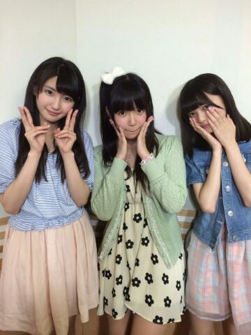

| 2014/06 14 Sat | ひめたん-OoO-その451 |

16人のプリンシパルtrois
ついに明日 千秋楽を迎えます！
13(金)夜公演 キャサリン
14(土)昼公演 ベル
14(土)夜公演 マキア
いままで散々の結果でしたが
18回目の公演で
初めて10役に選んでいただきました
心配してくださっていたみなさん
お待たせー（ ; ; ）ありがとうー
実はキャサリン、ベル、マキア
この3人はお稽古中から
狙っていた役だったの！
木曜日の時点では
このうち一人でも演じられたらいいなー
なんて思っていたのに
まさか達成できるとは（ ; ; ）（ ; ; ）
プリンシパルは明日の2公演で
終わってしまうけれど
最後まで楽しむ気持ちを忘れずに
笑顔でがんばります♪

明日は乃木ののの日です☆
さゆにゃん (井上小百合ちゃん)
あしゅりん (齋藤飛鳥ちゃん)
ぜひ聴いてくださいねー
そう、前回の日記に
MCおめでとうコメントたくさん
ありがとうございました！
今日はここが良かったよーとか
ここはもうちょっとこうしなきゃーとか
感想でも質問でも
どんどん日記に書いてねーそしたら読むよー♪
番組にお便り送ってくれたら
ひめたん読むよー( ^O^ )
9thシングル「夏のFree&Easy」
ジャケ写公開されました！
今回もType-Cは
アンダーバージョン仕様になってます
あの、オモテにいなくても
中の歌詞カードに...います多分...きっといます......

 拙者は今日ゲーセンでフグをとったでござる
拙者は今日ゲーセンでフグをとったでござる
よければ名前をつけていただけないでござろうか？
ひよこ(by 愛未)
ひめたんはどんな"おなかもと"を
貰ったらうれしいですかー？
そのネタはねーもうね
小学校低学年の頃からずーっとずっと
言われ続けていて慣れております
毎年この季節になると街歩いててそわそわする......
なんでそんなにスペイン語話せるんですか
たわけヽ(・∀・)ノ
いつも口が開いてて
へらへらしてるって言われます。
頑張って閉じてても気付いたら開いてます。
どうしたらいいですか？
仕方ない、私が縫おう。
ひめたんは梅雨の時期好き？カビない？
好きじゃないけど
さすがにカビませんねー
ひめたんがカビて青緑くなったら
キモくない？キモいよー(((o(*゜▽゜*)o)))
ひめたんて、もうイヤだ!!って思っても
我慢しなきゃならないとき、
どうやってその鬱憤の対処する？
一番は 寝る、かな。
日々積み重なっていくものってあると思うから
一概に良い方法と言えるかわかんないけど
でも、どうしても辛いことがあった日にも
頑張っておうちまで持ち帰って飲み込む。
それが無理そうなら
話を聞いてくれる誰かに付き合ってもらって
全部吐き出したらいいと思うよ。
ひめたんの日記の
コメント欄下２ケタに46を踏んだ方へ
手書きでコメ返するコーナー
＼ ひめたん46 ／

いつもたくさんのコメント
ありがとうございます
たくさんの励ましのコメント
ほんとにありがとねー（ ; ; ）
みんなのおかげで頑張れるよー！
最近はメンバーのみんなと
ますます仲良くなれた気がして嬉しい♪
りんご王国のさゆりんご姫とは
あいかわらず友好関係を
保っておりますよーヾ(＠⌒ー⌒＠)ノ
かなりんも玲奈さんも
いつでもひめたんタクシーで待ってますよー♪
ひめたんタクシーってなんぞやって思った方は
16人のプリンシパルtrois公式サイト
13(金)の公演日報を見てね☆
(＊´・ω・＊)
コメント(634)
2014/06/14 23:52